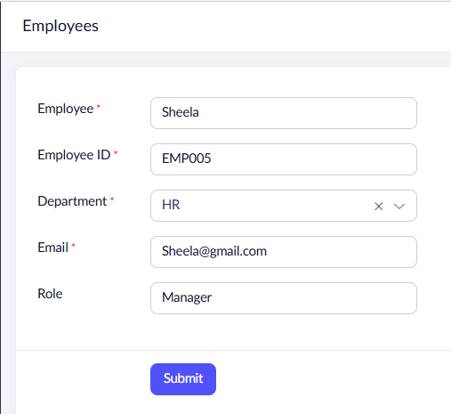
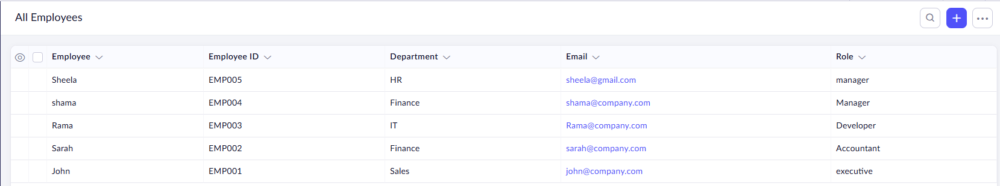
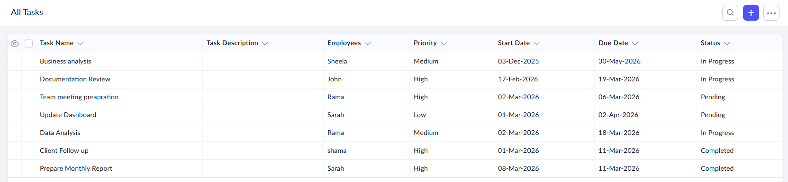
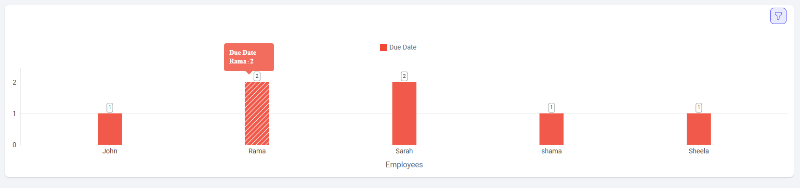
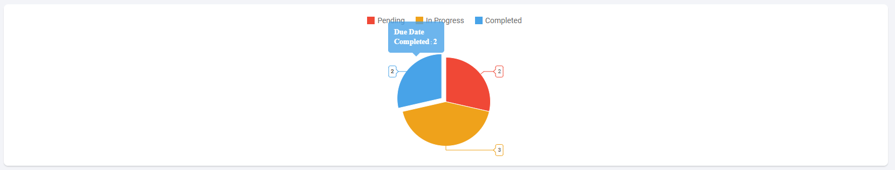

📌 Project Overview
Developed a Business Operations KPI Dashboard using Zoho Creator to manage tasks and monitor employee performance. The system provides a centralized platform to track task progress, identify delays, and analyze productivity through interactive dashboards.
🎯 Problem Statement
Organizations often lack a centralized system to track tasks and employee productivity, leading to inefficiencies and missed deadlines. This project addresses that gap by providing structured monitoring and reporting tools.
⚙️ Approach
- Designed structured forms for Employees and Tasks
- Created relationships between tasks and employees
- Implemented automation using Deluge scripting
- Built dashboards for monitoring KPIs and performance
🛠 Tools Used
- Zoho Creator (Low-code platform)
- Deluge scripting
- Data modeling using forms and relationships
- Built-in reporting and chart tools
✨ Key Features
Employee management system
Task tracking with status (Pending, In Progress, Completed)
Real-time dashboard with charts
Multi-user access for collaboration
Live data updates
⚡ Key Functionalities
- Created Employees and Tasks forms
- Assigned tasks using lookup relationships
- Calculated delay using formula:
Delay Days = Completion Date – Due Date
- Developed KPI dashboards:
- Task Status Distribution (Pie Chart)
- Employee Productivity (Column Chart)
- Enabled task creation, updates, and tracking
📊 Outcome
The dashboard improves operational efficiency by providing clear insights into task progress, delays, and employee productivity, enabling better decision-making.
📷 Project Screenshots
Employee Management Form

Employee Records Table

Task Management System

Employee Performance Chart

Task Status Distribution

Insight: The dashboard helps identify workload distribution, task delays, and employee productivity, enabling better task allocation and operational efficiency.
⬅ Back to Home